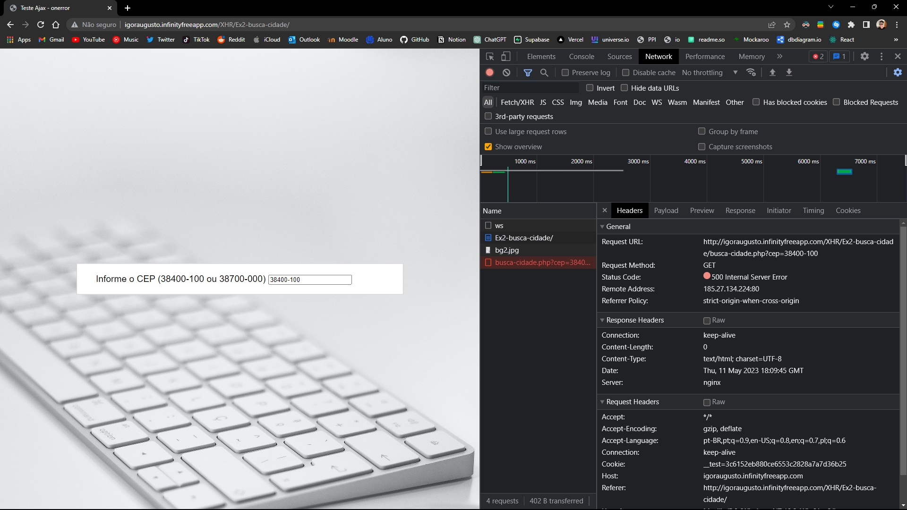
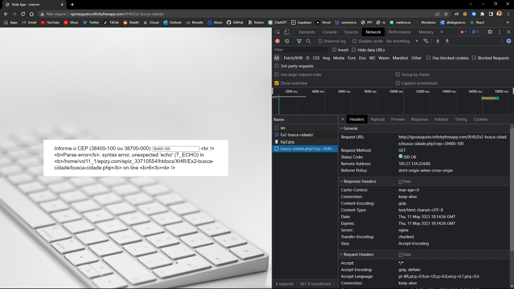

Exercício 2
a)
Headers:

Response:

c)
Headers:
d)
-
Qual foi o código de status retornado?
Foi retornado o código de status 200 OK, indicando que a requisição foi bem-sucedida, mas o conteúdo da resposta é o erro de análise de sintaxe, isto é, por mais que o código de status aparentemente indica que deu tudo certo, na realidade não foi o caso. -
O que foi retornado no corpo da resposta HTTP?
A mensagem de erro específica exibida no corpo da resposta é a seguinte:Parse error: syntax error, unexpected 'echo' (T_ECHO) in /home/vol11_1/epizy.com/epiz_33710554/htdocs/XHR/Ex2-busca-cidade/busca-cidade.php on line 6Essa mensagem de erro indica que um echo inesperado foi encontrado na linha 6 do arquivo busca-cidade.php, o que causa uma análise de sintaxe incorreta, ocasionado pela ausência do fecha parênteses no primeiro if.
-
Em qual situação essa configuração seria útil?
Essa configuração é útil durante o desenvolvimento ou em ambientes de depuração, pois exibe mensagens de erro e avisos diretamente na página, ajudando os desenvolvedores a identificar e corrigir problemas no código. -
Em qual situação ela jamais deveria ser utilizada?
Ela jamais deveria ser utilizada em ambientes de produção ou em servidores acessíveis ao público em geral. Exibir mensagens de erro detalhadas pode expor informações sensíveis do código-fonte, estrutura do sistema e outros dados confidenciais, representando um risco de segurança significativo. Em ambientes de produção, é recomendado configurar o servidor para registrar os erros em logs de forma segura, sem exibi-los ao usuário final.
Headers:
Igor Augusto